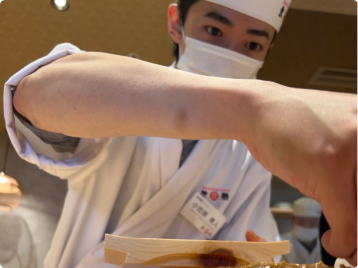
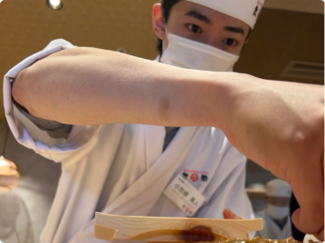
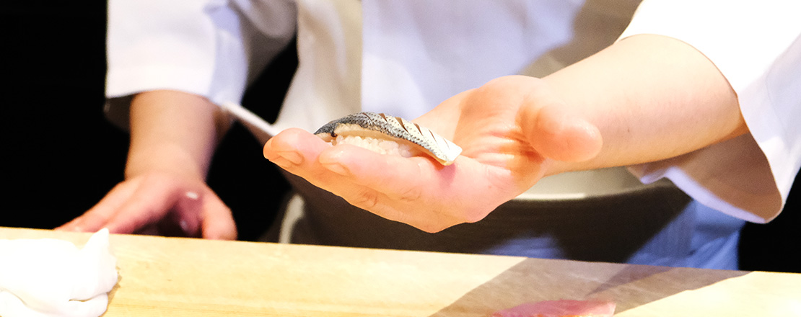
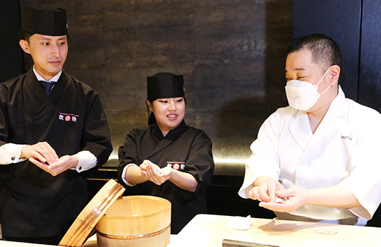
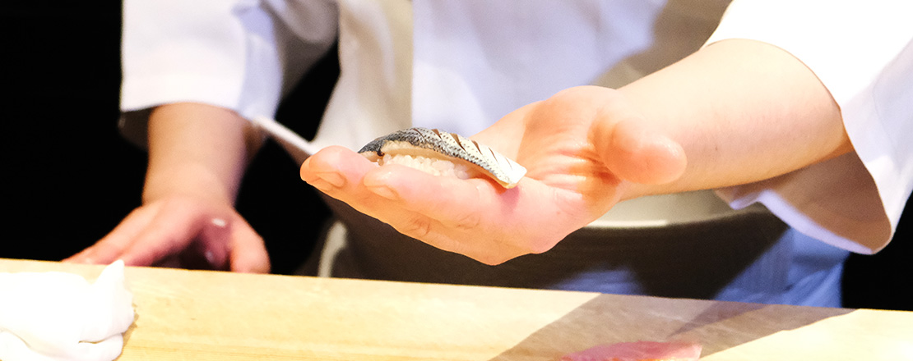
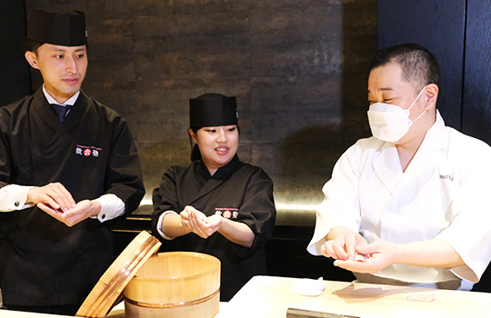

Welcome to Academy of Japanese Culinary Innovations, where culinary excellence meets the art of innovation. We are a renowned institute recognized for providing exceptional courses that attract chefs looking for the highest quality and creativity.
With instructors who have extensive experience in forefront restaurants in different culinary fields, we offer comprehensive curriculums that cover everything from the classic fundamentals to the latest trends and unique techniques in modern Japanese cuisine. When you join our academy, you will have the opportunity to explore premium ingredients, hone your presentation skills, and develop a deep understanding of the harmony of flavors and characteristics of Japanese cuisine, ALL JUST IN WEAKS!
Join us on this unique and innovative journey, where tradition and innovation meet to create extraordinary dishes.


-removebg-preview.png)


 


 


